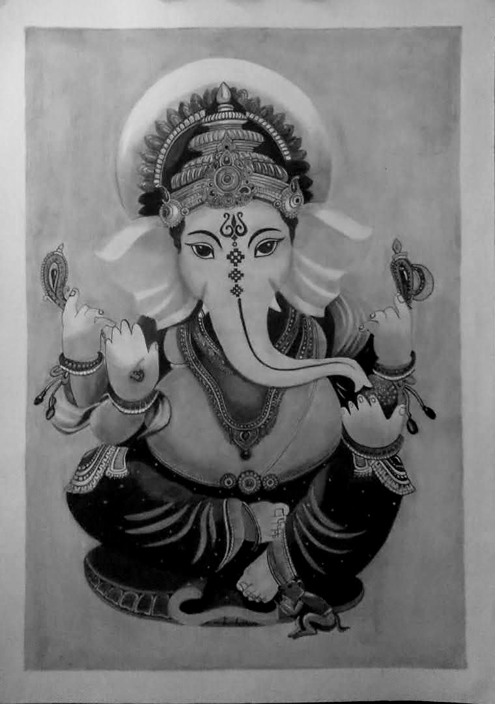

I'm passionate on coding. I love to draw a pencil arts such as portraits, creative arts and etc. And also I like
to listen a music as well as singing. I'm a hug fan of Shreya Goshal. When I was in my undergraduation
I never like to code. May be because of difficulties on that time. But later on when I came to 2nd year I realise that coding is more interesting like a pencil arts.
So that time I started to upgrade my self in coding.
Uniquesness
First Customes work

Hey Forks... This is the art which I was drew for the 1st time which is drew for my client. Sometimes
we want to relax our self with our favourite things. But you know one thing, only art can relax my self. Ofcourse
everyone has their own happiness. But my happiness is only one thing that is drawing. Ofcourse you can ask me a
question that if u happy with the art then why you're coding ? I can answer for that also.
Because coding is my passion. Eeveryone said that everyone cannot art like a pro, it want some extra talent.
But in my point of view, anyone can draw and everyone has a talent right.But if u have do with a confident and
with a whole hearted, you can succced in any thing in your life.
Favourite Programming Language
My first programming language is C in my college in my first semester. But My favourite programming
language is python and as well as I love to code in web development. So I started to learn html and css in
my 3rd semester through online. At firt I thought that i can't code and i can't learn. But later on I started to
challenge my self. So that I won with my self. Practice Makes A Man Perfect. So first we have to believe
our self